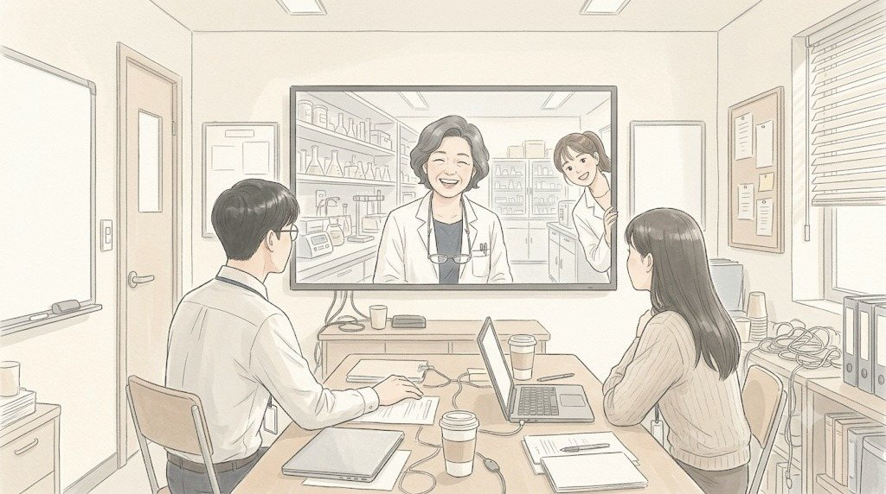
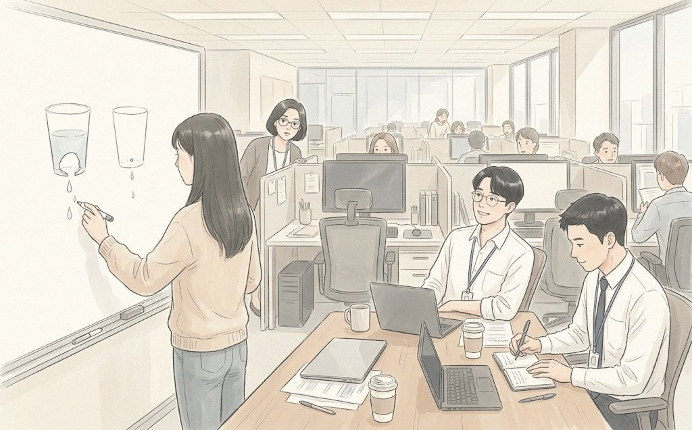
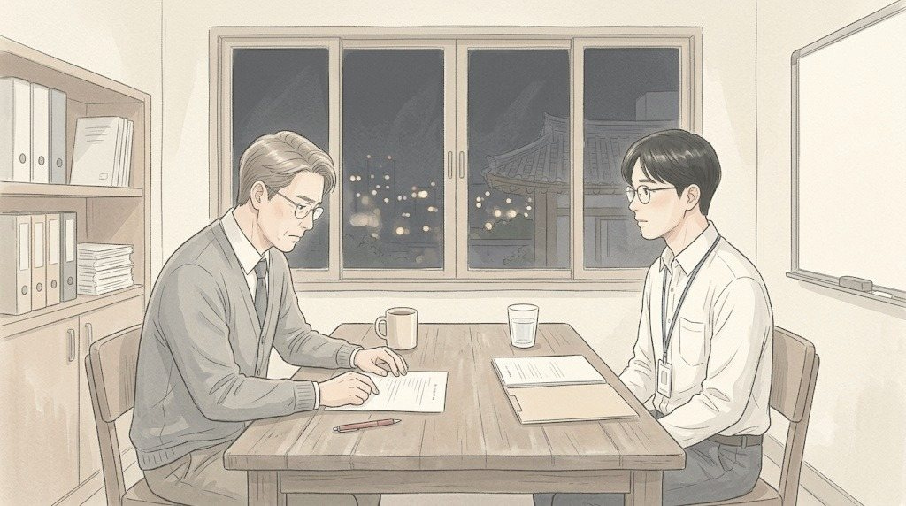

월요일 오전 8시. 한지석의 책상 위에 낡은 노트 한 권이 놓여 있었다.
갈색 표지는 모서리가 다 닳아 있었다. 표지에는 볼펜으로 '처방 노트 03 - 2008'이라고 적혀 있었다. 이우진은 커피를 내려놓다가 그 노트를 봤다.
"파트장님, 그게 뭐예요?"
"연구소 시절 노트."
한지석은 노트를 펼쳤다. 화학식과 숫자가 빼곡했다. 그 사이사이 연필로 그린 작은 그림이 있었다. 크림이 피부 위에서 얇게 퍼지는 모양, 수분이 빠져나가는 화살표.
"수결 수분 크림 처음 처방 잡을 때 내가 옆에서 비커 닦았어. 연구원 2년차 때."
"이 크림을 파트장님이 만드신 거예요?"
"만든 사람은 따로 있어. 나는 그분이 버린 시안을 다 기록했고."
한지석은 한 페이지에서 손을 멈췄다. '시안 17 - 분리됨. 여름 고온에서 3일.' 그 아래 '시안 23 - 통과'라고 적혀 있었다. 동그라미가 세 겹이었다.
"스물세 번째에 통과한 크림이야. 그런데 상세페이지에는 그런 얘기가 하나도 없어. '고보습', '피부 장벽', '저자극'. 다른 회사 크림이랑 똑같은 단어 세 개."
나서현이 노트북을 들고 다가왔다. 그녀의 화면에는 토요일 새벽에 쓴 문장이 떠 있었다.
'아침에 바르고, 저녁까지 잊으세요.'
한지석은 그 문장을 소리 내어 읽었다. 그리고 한참 말이 없었다. 나서현이 먼저 불안해졌다.
"너무 가볍죠? 고칠게요."
"아니. 고치지 마."
한지석은 노트를 그녀 쪽으로 돌렸다.
"근데 이 문장이 거짓말이 안 되려면, 그 아래에 증거가 있어야 해. 아침에 바른 크림이 저녁까지 남아 있다는 증거."
"그런 데이터가 있어요?"
"있어. 2008년에. 연구소가 열두 시간 동안 피부 수분량을 쟀어. 그 그래프가 어디 있는지 나만 알아."
나서현의 눈이 커졌다.
오전 10시. 연구소 화상회의.
화면 속 여자는 흰 가운 차림이었다. 청연 기초연구소 처방개발그룹 소은정 그룹장. 쉰한 살. 수결 수분 크림의 처방을 처음 잡은 사람이었다.
"한지석? 너 아직 회사 다니니?"
"선배님, 저 아직 다녀요."
"마케팅 간다고 연구소 나갈 때, 3년 안에 돌아온다며."
"11년 됐습니다."
소은정은 웃었다. 그리고 한지석 옆에 앉은 나서현을 보며 물었다.
"그래서, 뭐가 필요해?"
"시안 23번 수분 지속 데이터요. 2008년 여름 임상 자료."
"그거 공개 못 해. 광고에 쓰려면 다시 검증해야 돼."
"알아요. 숫자 그대로 쓰려는 게 아니에요. 그래프 모양만 설명하고 싶어요. 고객이 이해할 수 있게."
소은정은 잠깐 생각했다. 그리고 화면 밖의 누군가에게 말했다.
"미진 씨, 2008 수결 폴더 좀 찾아 줄래?"
화면 끝에서 젊은 연구원이 고개를 내밀었다. 처방개발그룹 남미진 연구원. 입사 2년차.

"그룹장님, 그거 지하 문서고에 있어요. 종이로요."
"그럼 내려가."
남미진이 한숨을 쉬며 사라졌다. 소은정이 한지석을 봤다.
"지석아. 너 그때 비커 닦던 거 기억나?"
"네."
"그때 네가 그랬어. 이 크림은 좋은데, 사람들이 왜 좋은지 모를 거라고. 13년 걸렸네."
화요일 오후 3시. 온라인기획파트.
연구소에서 스캔본이 왔다. 누렇게 바랜 종이 위의 그래프 하나. 가로축은 시간, 세로축은 피부 수분량. 다른 크림들의 선은 여섯 시간이 지나면 바닥으로 떨어졌다. 시안 23의 선은 열두 시간째에도 처음 높이의 절반 이상에 머물러 있었다.
"이거예요."
나서현이 말했다. 한지석은 고개를 끄덕였지만 표정은 밝지 않았다.
"근데 법무에서 이 그래프 못 쓰게 할 거야. 2008년 자료라."
"그럼 그래프 말고 말로 하면요?"
나서현은 화이트보드에 그림을 그렸다. 물컵 두 개. 하나는 구멍이 크고, 하나는 구멍이 작았다.
"이 크림은 물을 많이 넣는 크림이 아니라, 물이 늦게 빠지게 하는 크림이다. 맞죠?"
한지석은 그 그림을 보다가 웃었다. 13년 동안 그가 설명하지 못한 걸, 스물여섯 살 신입이 물컵 두 개로 그렸다.

"맞아. 정확해."
"그럼 이렇게 써요. '물을 더 넣는 대신, 덜 빠지게 했습니다.'"
이우진이 옆에서 받아 적었다. 최윤아가 모니터 너머로 고개를 내밀었다.
"리뷰 데이터 보니까 수결 크림 산 사람들이 제일 많이 쓴 단어가 '오후'예요. '오후에도 안 당긴다', '오후까지 촉촉'. 천이백 개 리뷰 중에 삼백 개."
"그거 페이지 두 번째 줄에 넣어요."
한지석이 말했다.
"고객이 쓴 말이니까 법무도 할 말 없을 거야."
수요일 저녁 7시. 법무팀 회의실.
법무팀 길현수 차장은 출력본을 넘기며 빨간 펜을 들었다 놨다 했다. 마흔네 살. 광고 문구 심의 12년차. 그가 지운 문장은 수천 개였다.
"'저녁까지 잊으세요.' 이건 효능 과장으로 보일 수 있어요."
"'잊으세요'는 효능이 아니라 권유입니다."
한지석이 말했다. 길현수가 안경을 고쳐 썼다.
"그럼 '덜 빠지게 했습니다'는요? 근거 자료는?"
"연구소 내부 자료가 있습니다. 공개용으로 재검증은 다음 달까지 받겠습니다. 그 전까지는 '처방 설계 의도'로 표현하겠습니다."
길현수는 한참 출력본을 내려다봤다. 그리고 빨간 펜을 내려놓았다.

"한 차장님. 저 12년 동안 마케팅팀이 근거를 먼저 들고 온 건 처음 봐요."
"연구소 출신이라서요."
"아니요. 보통은 문구 먼저 쓰고, 근거는 우리더러 찾아 달라고 해요."
그는 '잊으세요' 옆에 작은 체크 표시를 했다. 통과라는 뜻이었다.
토요일 오전 7시 50분. 대회의실.
화면에 새 상세페이지가 떴다. 첫 줄은 나서현의 문장이었다. 두 번째 줄은 고객 리뷰였다. 세 번째 줄에 물컵 두 개 그림이 있었다.
문혜경은 휴대폰을 꺼내 직접 페이지에 들어갔다. 스크롤을 내리다가 멈췄다.
"이 물컵 그림, 누가 그렸어요?"
"나서현 사원입니다."
한지석이 답했다. 문혜경은 고개를 끄덕였다.
"이 문장은요? '물을 더 넣는 대신, 덜 빠지게 했습니다.'"
한지석이 잠깐 망설였다. 그 문장은 함께 만든 것이었다. 연구소의 13년과 신입의 물컵 그림이 반씩 들어 있었다.
"연구소 소은정 그룹장의 처방을, 나서현 사원이 글로 옮겼습니다."
문혜경이 빨간 볼펜으로 무언가를 적었다.
"연구소 사람 이름이 이 회의에서 나온 건 처음이네요."
회의가 끝난 뒤, 한지석은 휴대폰을 꺼내 연구소에 메시지를 보냈다.
답은 10분 뒤에 왔다.
그다음 주 월요일. 최윤아가 주간 리포트를 띄웠다.
수결 수분 크림 상세페이지 전환율. 지난주 대비 1.7배.
파트 전체가 조용히 환호했다. 다만 최윤아만 웃지 않았다. 그녀는 숫자 옆에 작은 글씨로 메모를 달았다.
'주의 - 같은 주에 쿠폰 행사 겹침. 페이지 효과인지 쿠폰 효과인지 분리 필요.'
(EP14 끝)